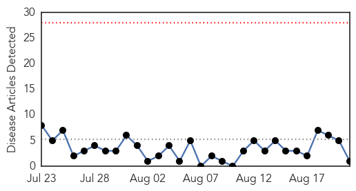
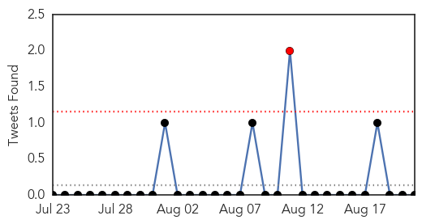
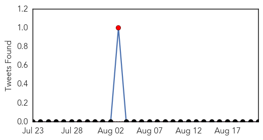
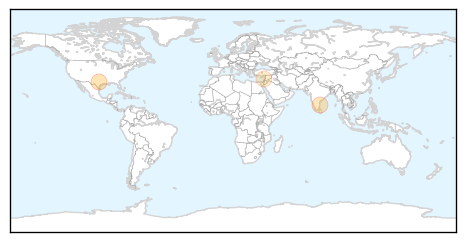
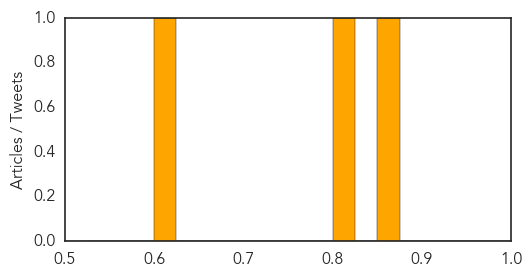

Influenza
30-Day Web Trend
0 alerts, 0 warnings

30-Day Twitter Trend
3 alerts, 0 warnings

Article Locations
Article Confidences

Top Articles:
Top Tweets:
- 0.544
- RT: Only 1/626 tested seasonal influenza A(H1N1)pdm09 viruses to 1-Aug, show oseltamvir resistance. http://t.co/1ovP1hTnZe
Hepatitis
30-Day Web Trend
2 alerts, 0 warnings
30-Day Twitter Trend
1 alerts, 0 warnings

Article Locations
Article Confidences
Top Articles:
Top Tweets:
-
No tweets found for Aug 21, 2014